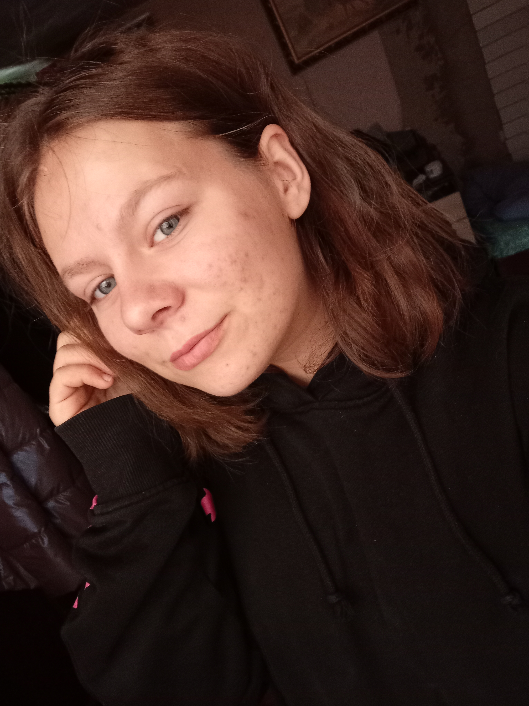
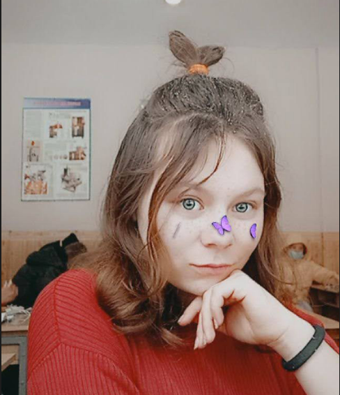
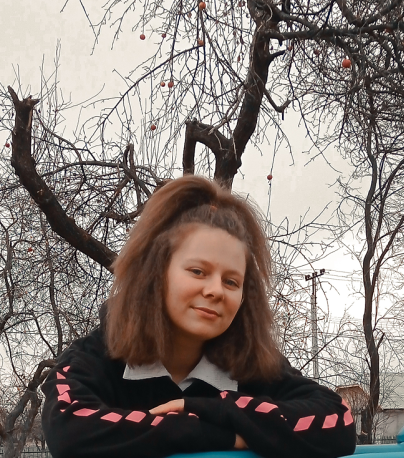
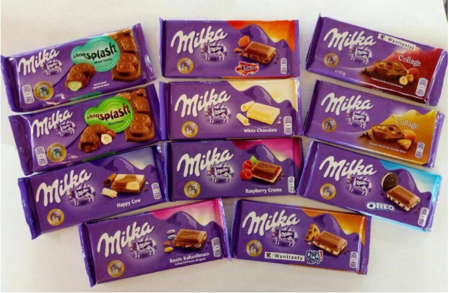
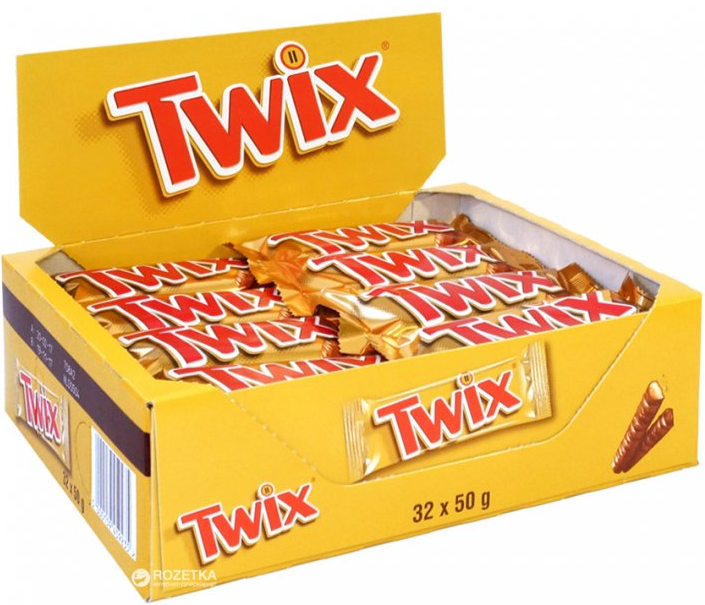
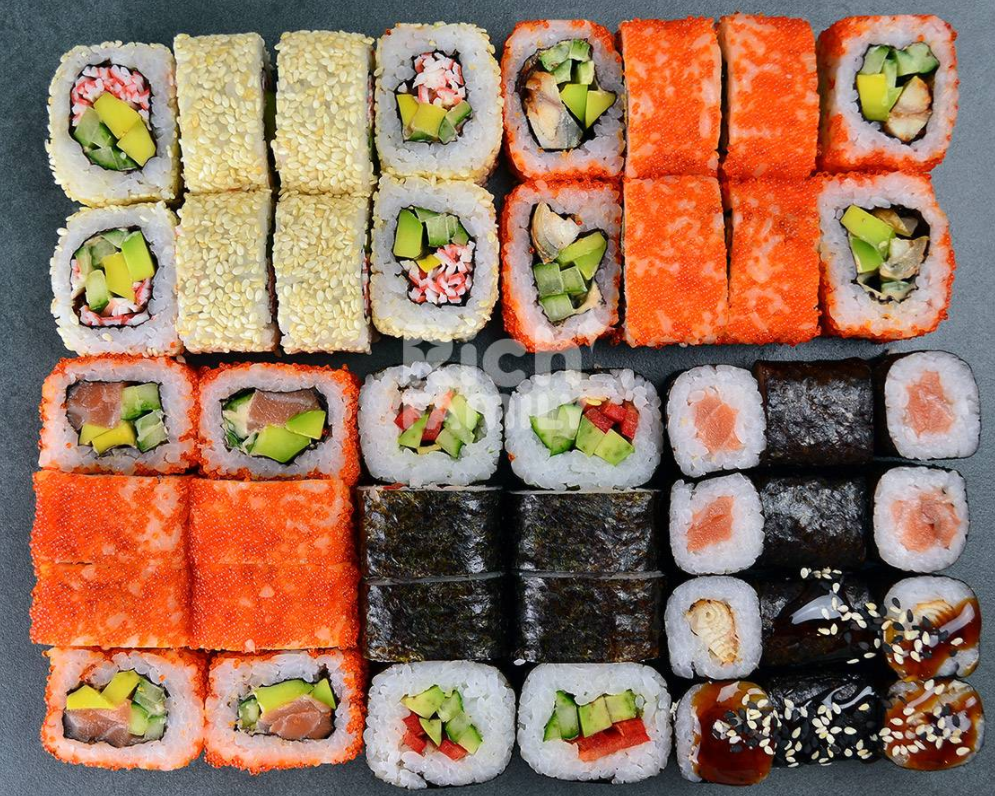
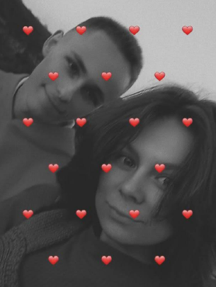
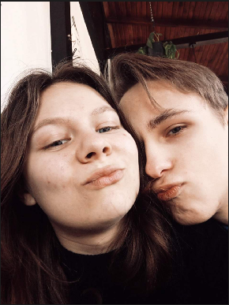
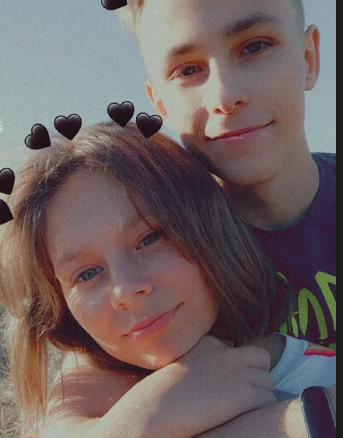
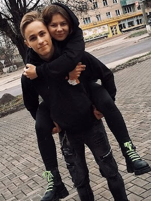

💖Сайт про мою принцеску💖
Принцеска Юлія

Юлія - чарівна дівчина, яку завжди цікавлять
всілякі новинки, завжди прагне попробувати щось
нове та цікаве. З нею ніколи не буває скучно,
ця принцеска завжди підтримає розмову, а її юмор
не дасть заскучати, тому що він завжди на висоті, обожнює
шопінг та солодке.
Моя принцеска надзвичайно чарівна, гарна, мила, добра, весела, розумна та цікава дівчина.
В неї важкий характер, який мені дуже і дуже подобається, також у неї шикарна фігура, від якої я також кайфую. Маська завжди вислухає та підтримає у важку хвилину, тому у її підтримці можна навіть не сумніватись.
Зараз ця чарівна красуня навчається на повара, а тому дуже ы дуже смачно готує.
Моя принцеска надзвичайно чарівна, гарна, мила, добра, весела, розумна та цікава дівчина.
В неї важкий характер, який мені дуже і дуже подобається, також у неї шикарна фігура, від якої я також кайфую. Маська завжди вислухає та підтримає у важку хвилину, тому у її підтримці можна навіть не сумніватись.
Зараз ця чарівна красуня навчається на повара, а тому дуже ы дуже смачно готує.
💖Віршики які описують її(авторський вибір)💖
💖Та фооооооточки💖
💖Та фооооооточки💖

"Глаза"
Твои прекрасные глаза!
Глядеть я в них,готов часами
Их ясный,чистый,нежный взгляд
Меня зовёт,ласкает,манит
И в моём сердце,этот взгляд
Той сладкой болью,отозвался
Он бурю чувств во мне зажёг
Огнём любви к тебе взорвался
Тем взглядом нежным я пленён
Жизнь не могу без них,представить
Как я хочу в них утонуть
И сердце в них,своё оставить
Твои прекрасные глаза!
Глядеть я в них,готов часами
Их ясный,чистый,нежный взгляд
Меня зовёт,ласкает,манит
И в моём сердце,этот взгляд
Той сладкой болью,отозвался
Он бурю чувств во мне зажёг
Огнём любви к тебе взорвался
Тем взглядом нежным я пленён
Жизнь не могу без них,представить
Как я хочу в них утонуть
И сердце в них,своё оставить

"Улыбка"
Твоя улыбка, так прекрасна!!!
Сияет, солнышком она.
В ней столько нежности, соблазна,
В ней столько радости и счастья,
А сколько в ней любви, тепла…
Улыбка твоя, греет душу,
На сердце от нее легко.
И даже в холод, лед и стужу,
И даже в дождик не послушный,
Она подарит всем тепло.
Твоя улыбка, так прекрасна!!!
Сияет, солнышком она.
В ней столько нежности, соблазна,
В ней столько радости и счастья,
А сколько в ней любви, тепла…
Улыбка твоя, греет душу,
На сердце от нее легко.
И даже в холод, лед и стужу,
И даже в дождик не послушный,
Она подарит всем тепло.

"Красота"
Мне на тебя никак не наглядеться,
Смотрю любуюсь, глаз не отвести.
Скажи мне, где взяла такое средство,
Чтоб стать красивей, чем звезда в ночи.
Тебе, наверно, фея подарила
Румянец нежный, взяв из свежих роз,
А ночь своею краской наделила
Ресницы, брови, локоны волос.
Ты красотой своей стоишь сияешь,
А у меня кружится голова.
То вдруг улыбкой землю освещаешь,
То вдруг откинешь локоны слегка.
Мне на тебя никак не наглядеться,
Смотрю любуюсь, глаз не отвести.
Скажи мне, где взяла такое средство,
Чтоб стать красивей, чем звезда в ночи.
Тебе, наверно, фея подарила
Румянец нежный, взяв из свежих роз,
А ночь своею краской наделила
Ресницы, брови, локоны волос.
Ты красотой своей стоишь сияешь,
А у меня кружится голова.
То вдруг улыбкой землю освещаешь,
То вдруг откинешь локоны слегка.
Вкусняшки які вона любить
MILKA, TWIX, СУШІ



Улюблений виконавець
СКРИПТОНИТ
Аділь Оралбекович Жалелов - більш відомий під сценічним псевдонімом Скриптоніт (англ. Scriptonite) — казахський реп-виконавець та бітмейкер, колишній учасник лейблу Gazgolder. Уперше голосно заявив про себе у 2013 році відеокліпом на пісню «VBVVCTND», через два роки Скриптоніт випустив свій дебютний альбом «Дом с нормальными явлениями», який став одним із найуспішніших російськомовних реп-альбомів 2015 року.
Трошечки совмєстних фоточок =)



